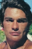
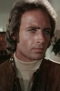
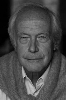

Also known as:I corpi presentano tracce di violenza carnale (original title)
Country:Italy, 93 minutes
Spoken languages:Italian
Genres:Horror, Mystery, Thriller
Director(s):Sergio Martino
Writer(s):Sergio Martino, Ernesto Gastaldi
Video Codec:Unknown
Number: 735


Certification:
Storyline:
A masked serial killer with psychosexual issues strangles female coeds with scarves before dismembering them. When a wealthy student identifies one of the scarves and thinks she has a lead on a suspect, she becomes the killer's next target, retreating to her family's remote cliffside villa with three of her girlfriends.
Cast:   

Medium: Bluray,
Comments: Part of: Giallo Essentials - Yellow
Loaned: No
Aspect ratio: Unknown